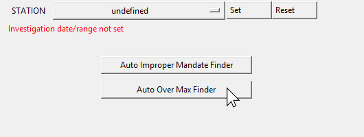
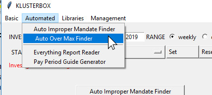
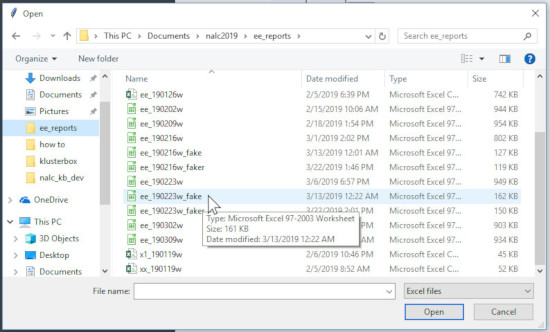
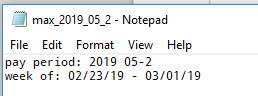
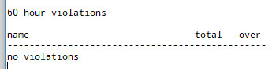
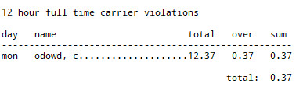
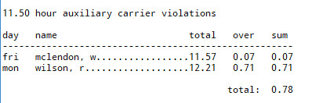
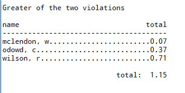

Using the Auto Over Max Finder
The Auto Over Max Finder is a tool for finding violations of the 12 and 60 hour rule. For those not familiar with the rule, there is a rule that carriers can not be made to work more than 12 hours in a day and/or 60 hours in a week. According to the rule, auxiliary (or CCA) do not have the 60 hour weekly limit, instead they have an 11.50 hour daily limit.
There is a flaw in the Auto Over Max Finder in Klusterbox version 2.0 as it does not distinguish between OTDL and non-OTDL carriers. It treats all carriers at OTDL carriers and only tracks violations over 12 hours, but given the speed and simplicity of the Auto Over Max Finder, it should be a definite improvement on compiling a list of violations manually. Also, I’ll be adding functionality to Klusterbox in later version which should address this deficiency.
There Are Just Two Steps
Step One: Open the Auto Over Max Finder. Like the Auto Improper Mandate Finder, there are two ways to open the Auto Over Max Finder. The first way will be to press the Auto Over Max Finder button on the main screen when the Investigation Range is not set.

The second way to open the Auto Over Max Finder will be to use the drop down menu bar on the top of the main screen. The path is:

Step Two: Select a file containing the Employee Everything Report. Again the Employee Everything Report has to be in the csv or xls format. It is up to you to navigate to the folder where you are keeping your Employee Everything Report. Once there, click on the file. Note that you should have the Employee Everything Report for the entire service week for the Auto Over Max Finder to work properly.

Only files with the csv or xls format will show up on the file dialog. However if you select on a file which is not an Employee Everything Report, then nothing will happen. I’ll put an error message here when I make updates to Klusterbox 2.0.
Reading the Over Max Report
The report which is generated by the Auto Over Max Finder is a text (.txt) document which should be opened in notepad or what ever app you have designated to open text documents.
As Klusterbox generates a text document for the report, it also names the file. The naming convention for Over Max Reports is “max_” followed by the year and the pay period, all separated by an underscore (“_”). Klusterbox places the file in the “over_max” folder where you have placed the Klusterbox exe file. If the “over_max” folder does not exist, then Klusterbox creates it.
On the first line of the report is the pay period. On the second line of the report is the investigation range. This should show the dates of the service week you are investigating. As always, the beginning of the week will be a Saturday and the end of the week will be a Friday.

The report consist of 4 parts:
| 1. | 60 hour violations |
| 2. | 12 hour full time carrier violations |
| 3. | 11.50 hour auxiliary carrier violations |
| 4. | Greater of the two violations |
60 hour violations is a list of carriers who have exceeded the 60 hour limit for the week. The total column shows the total amount of hours worked in the service week and the over column shows the hours worked in excess of the 60 hour limit. If there are no violations, then “no violations” will appear under the header.

12 hour full time carrier violations is a list of full time carriers who have exceed 12 hours of work for the service week. The day column shows the day of the week when the violation occurred, the total column shows the total hours worked on that day, the over column shows the amount of hours worked in excess of 12 hours and the sum shows a total for that carrier for the whole week where there were violations of the 12 hour limit. If there are no violations, then “no violations” will appear under the header.

11.50 hour auxiliary carrier violations is just like the 12 hour full time carrier violations section except it deals with auxiliary carriers who have 11.50 hour limit.

Greater of the two violations is the final section. For purposes of finding the appropriate remedy it is necessary to determine which violation is greater, the daily or the weekly. The “greater of the two violations” section finds the greater violation and list it. It there is only one violation then it list that violation. This section provides a list of what you should be seeking a remedy for in the grievance process.
